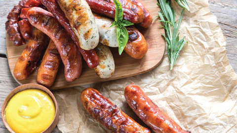

Sosis Terkenal di Jerman
Sosis adalah salah satu ikon kuliner Jerman yang mendunia. Negara ini memiliki lebih dari 1.500 jenis sosis dengan rasa, bentuk, dan cara penyajian yang unik di setiap daerah.
Berikut beberapa sosis paling populer:
- Bratwurst - Sosis panggang khas Nürnberg, gurih dan juicy.
- Currywurst - Street food favorit, disajikan dengan saus kari tomat pedas.
- Weisswurst - Sosis putih dari Bavaria, nikmat disantap hangat dengan pretzel dan mustard manis.
- Bockwurst - Sosis rebus yang lembut, sering disantap bersama roti dan bir.
Fun Fact: Orang Jerman rata-rata mengonsumsi lebih dari 60 kg sosis per tahun. Bahkan, di Berlin ada museum khusus Currywurst!

Galeri Sosis Jerman


Tips Penyajian: Sosis Jerman paling nikmat disantap dengan pretzel, sauerkraut (kubis asam), dan mustard. Untuk pengalaman otentik, coba padukan dengan bir Jerman favorit!
Banyak wisatawan mencicipi berbagai jenis sosis saat berkunjung ke Jerman, terutama saat festival makanan seperti Oktoberfest. Nikmati kelezatan sosis langsung dari negara asalnya!